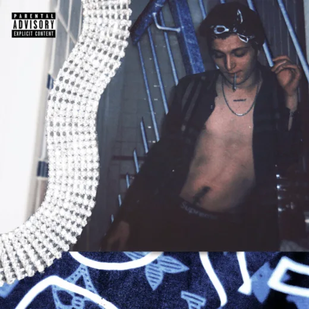
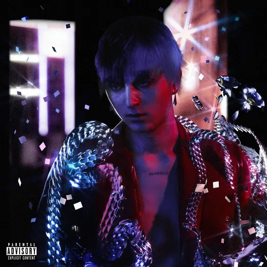
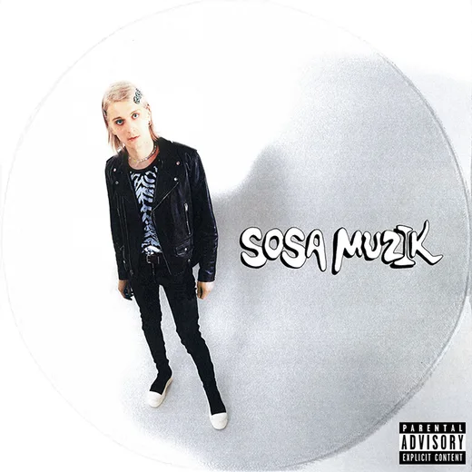
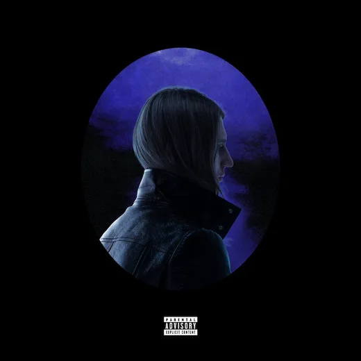
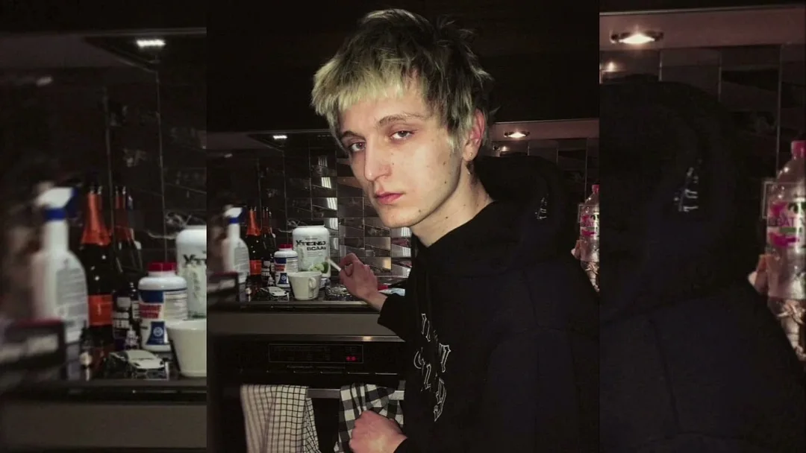
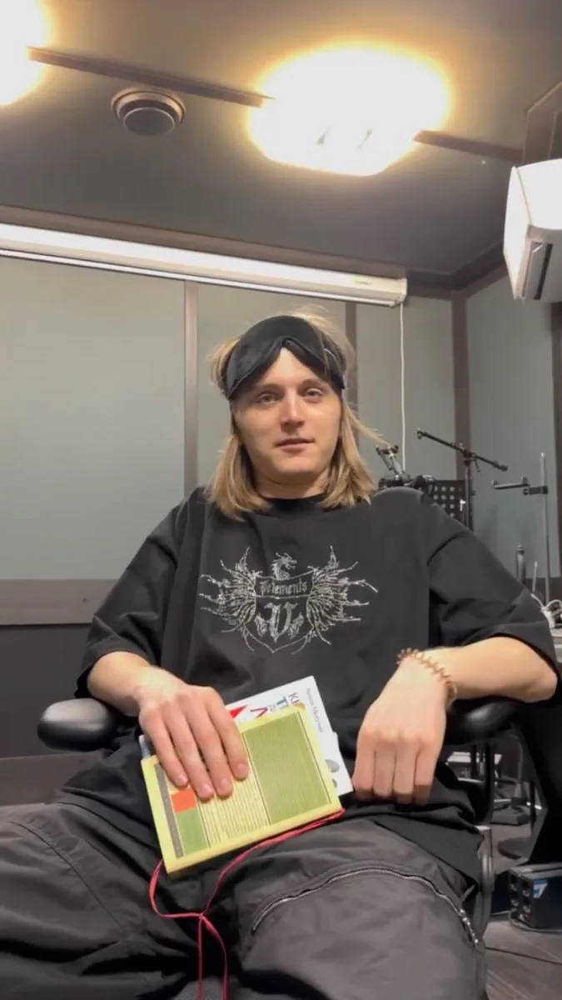
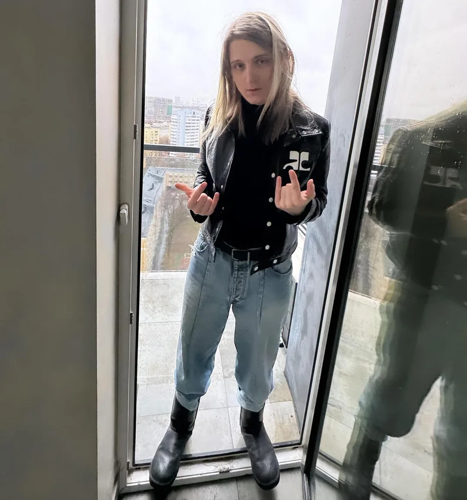
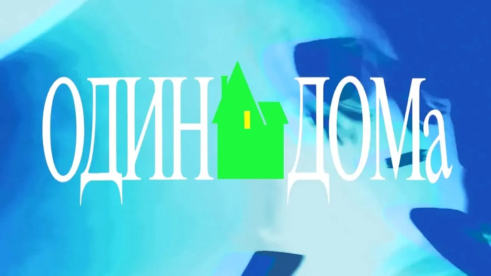
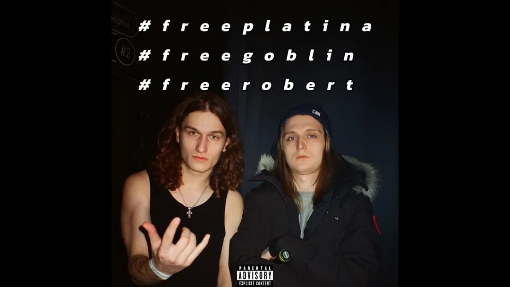

Представьте, что вы выбираете Платину на каждый день. Вам дают два альбома. На одном парень просит остаться с ним на ночь, потому что ему страшно засыпать. На другом берёт у бати машину и едет с друзьями на рыбалку.
На обеих обложках указан один и тот же исполнитель, но первую Платину хочется слушать по дороге домой, а вторую — когда домой ещё никто не собирается. Первая вышла в 2019-м, вторая — в 2024-м. Давайте разберёмся, какую пробу брать, сколько весит хороший панч и что происходит с Платиной после пяти лет на русском стриминге.
Какую пробу взять
В ювелирном магазине проба говорит, сколько платины в кольце. Здесь год выпуска помогает понять, сколько в альбоме тоски, сколько баса и в какой момент вас позовут на дачу.
-

2018
РНБ КЛУБ
Ранний Платина уже нашёл манеру петь. Компания вокруг него ещё только собиралась.
Иней! на Qobuz -

2019
Опиаты Круг
Если едете ночью в одиночку и хотите, чтобы голос в наушниках сам себе отвечал.
Как в первый раз -

2021
Sosa Muzik
Если выбираете музыку на компанию и хотите, чтобы её услышали и с заднего сиденья.
Веном с Big Baby Tape -

2024
Платина
Если интересно, что остаётся от весёлого парня, когда все разошлись.
Бассок Один дома
Сколько весит панч
«Веном» тяжелее на колонках, а «Нотр-Дам Париж» — в наушниках. Во второй песне Платина просит лечь рядом. Фраза начинается как подкат, и только в конце выясняется, что ему страшно спать. Он произносит это тем же тонким голосом и успевает договорить, пока ты ещё ждёшь обычного продолжения.
Если выписать строчку отдельно, на премию за лучший панч она вряд ли потянет. А в песне от неё тяжелеет всё, что было до. Так примерно и работает плотность Платины. Слов мало, а выбросить из них хоть одно уже жалко.

Другие металлы
Золото — Big Baby Tape
Для сравнения удобно взять один и тот же бит. «Веном» спродюсировал сам Tape, и когда он вступает, слышно, как хриплый голос берёт на себя припев. Его герой произносит, кто он и сколько у него денег, с таким удовольствием, что на этом уже можно построить песню. У Платины чаще хочется дождаться, пока он добавит к хвастовству странную подробность и сам себе всё испортит.
ВеномБелое золото — OG Buda
В «Биг бое» Платина держит песню четырьмя строками припева, а Буда успевает за один куплет перейти от часов на запястье к городу, который может тебя сожрать, и обратно к девушке, для которой он готов устроить сказку. Буда добавляет подробности, пока из них не выходит целый вечер, а Платине хватает нескольких слов, чтобы вернуть всех к тому, с чего начали.
Серебро — Lil Krystalll
В «Трёх буквах» ребята ставят рядом РНБ и AMG, будто марка машины и название своего клуба одинаково хорошо объясняют, кто ты такой. В песне они вспоминают, как делили матрас, и рассказывают, как теперь летят из Лондона в Париж бизнес-классом. Понятно, откуда и куда человек поднялся. У Платины мне интереснее момент после того, как он уже добрался. Допустим, деньги есть и в клуб пускают. Что ты делаешь, когда возвращаешься домой и тебе всё равно паршиво?
Три буквыКак гнётся оправа
Пластичность Платины проще проверить на Sosa Muzik. На одном альбоме есть «Веном», который держится на тяжёлом припеве, и «Сан Ларан», где он поёт под гитару. Руслан Муннибаев услышал в ней поп-панк, сыгранный будто на детских инструментах. При этом парень в песне всё тот же. В дорогих ботинках Rick Owens он столько проходил, что стёр подошву, а в гости всё равно собрался в них. В этой подробности для меня больше Платины, чем в названии любого бренда. Критики о Sosa Muzik.


С гостями всё как с камнями. Важно, где их поставили и что они делают с готовой вещью.
Feduk — если в песне хочется куда-то уехать
В «Ламбо» синтезаторы меняют настроение по ходу трека, и оба голоса умеют подстроиться так, что хочется дослушать поездку до конца. Николай Редькин сравнивал песню с музыкой к «Драйву». Я бы поставил её человеку, который считает, что тексты Платины можно переставлять местами без всякой разницы. Здесь самое важное происходит, пока он ещё тянет предыдущую строку.
Ламбо с FedukДора — если хочется услышать ответ
В её версии «Сан Ларан» у девушки самой футболка Saint Laurent и бриллианты Cartier в заколке. Она прекрасно знает цену этих вещей и спрашивает парня, сколько он сам стоит без одежды. Дальше Платина снова поёт про джинсы. В сольной версии я на этом месте подпеваю, а в дуэте жду, что он наконец ответит. Гитару, мелодию и главного героя можно оставить. Достаточно дать слово человеку, которого он до этого описывал сам.
Сан Ларан с ДоройВоскресенский — если будете носить украшение на рыбалку
По его словам, «Бассок» записывали 22 часа. Платина просил переделывать дубли, в которых Воскресенский чуть съезжал с бита, и сам переписывал свои партии. В готовой песне послушайте, как они передают друг другу историю. Воскресенский берёт у бати машину, Платина разбирается с полицией и отправляет всех ловить рыбу, а Воскресенский возвращается со словами про церковь и запах кадила.
У каждого хватает времени сказать своё и уступить место следующему. Девушек, правда, на рыбалку не берут, потому что они якобы распугают рыбу разговорами. Сами приезжают с колонкой. После «Сан Ларан» мне особенно хочется услышать, как выглядел этот выходной с другой стороны.
Как Платина выглядит через пять лет
В августе 2024 года «Опиаты Круг» пропал с российских стримингов. В сентябре альбом вернулся, но уже без трёх песен, включая ту, в честь которой он назван. У «Басска» была своя история. 12 ноября 2024 года Измайловский районный суд Москвы признал запрещённой информацию по двум адресам — на странице со словами песни на Genius и на странице с записью во «ВКонтакте». Суд согласился с прокуратурой, что трек пропагандирует употребление наркотиков. Через пятнадцать дней The Flow обнаружил, что в VK Музыке песня уже недоступна, а на трёх других российских площадках ещё играет. О возвращении альбома. Решение суда.
«Бассок» и правда делает тамошнюю жизнь заманчивой. В припеве Платина вспоминает, что курил в девятом классе, а через несколько строчек уже считает деньги. Дальше герои отдыхают, откупаются от полиции, пьют пиво и радуются, что им никто не мешает. Посреди этого Воскресенский говорит, что ему хорошо трезвым. Можно услышать все эти реплики и решить, что припев всё равно перевешивает. Вот такой аргумент хотелось бы прочитать в решении. Суд не привёл ни одной строчки и не объяснил, как она работает в песне.
С концертами перемена произошла ещё весной. Платину задержали на выступлении в Томске, и на следующий день суд постановил выдворить его из России. Это отдельное дело. В первых гастрольных анонсах после выдворения были Алматы, Тбилиси, Кишинёв и Рига. Получается, песню записали рижанин и парень из Гомеля, бит для неё сделали продюсеры, работавшие в Колпино, а слушателю из Томска, чтобы снова попасть на концерт, пришлось бы уже планировать поездку за границу. О решении в Томске. Анонс гастролей.

Какую Платину я бы взял себе
Для первого знакомства — 2019 год. Но если выбирать по тому, какую запись мне хочется обсуждать после прослушивания, я бы взял 2024-й и начал с двух версий «Завидуют». В обеих Платина сначала объясняет, как хорошо отдыхает в клубе, потом уверяет, что ему всё равно, а через пару строк обращается к Валентине. Она ждёт звонка, он не спит до утра. Под конец он опять заводит про тур и то, что он лучший рэпер в России, и зачем-то несколько раз говорит «прости». Когда вторая версия снова начинается с клуба, уже знаешь, кого этот парень вспомнит через минуту. Вот за это я бы оставил обе.
Следом включается «Один дома». Платина сидит один, ему осточертело курить, но надо дописать релизы. У слушателя zzile на Album of the Year «Бассок» получил 94 балла, «Один дома» — 70, хотя за текст он отдельно выделил именно вторую песню. По-моему, вполне честная оценка. Когда друзья попросят поставить что-нибудь повеселее, я включу им «Бассок». А если кто-то спросит, чего я вообще столько лет слушаю этого парня, поставлю «Завидуют» и подожду, пока он дойдёт до Валентины. Отзыв zzile.
